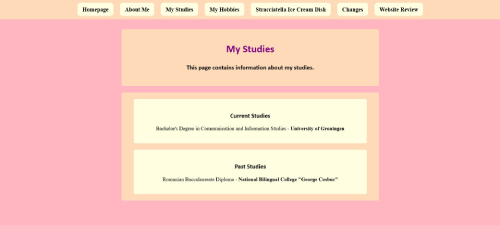
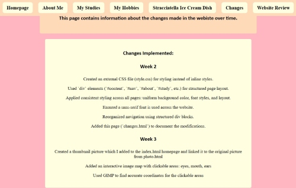
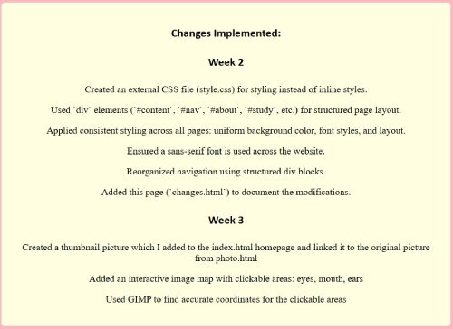

Peer Review
For one the course “Web Design” I had to review a website from one of my classmates. I was assigned the this one. Overall the design look good, scan-able and clear. Below you can find a more detailed analysis.
Scanning
The pages of the website are well designed for scanning.
The most important term of each page are also displayed as the most prominent one. Within all pages the header is prominently displayed, with the content being clearly visible, as seen below. There is very little distraction or design noise on the page.

An example of the page showcasing the clear and scan-able design.
Furthermore, It is obvious what is clickable by the hover, and standard link. But lacks an indication of which page the user is on.
An example of the navigation without concurrent page indicator.
Text
Most text is quite short but the longer text of the ice cream is fairly easy to scan through the use of sub headers, indicating the content, although overuse of headers may hinder the user.
Most text is to the point, so I have not seen much “happy talk”
Text is pretty clear, but text is some texts is still centered. Checking whether the text is non sarif Adding “sans-serif” after font family in the CSS and adding “<meta charset="UTF-8">” to the head tag in the html may help making sure the text comes through well.

An example of the text.
Navigation
Initially the navigation menu was below the fold, at the bottom of the page. Previously, the site had a navigation below the fold, Now it’s right at the top improving usability greatly. The navigation is now friendly, with it being at the very top of the page and consistent layout.
There is a link the homepage, in English, an icon may make it more accessible to users with different language, but the rest of the site wouldn’t. So I believe it’s is a good choice in design.
There is not a 'you are here' indication, adding one, may improve the users experience.
An example of the navigation with hover indication.
Homepage
The text is pretty clear and explains what can be done on the website, but doesn’t have any interesting elements to catch users interest. The homepage also does not contain a lot of content. Adding more content may increase users interest and retention.
Design
The colour combination is very good, with light colour indicating greater focus. Overall, These colours offer great focus and are pleasing to the eye. There are no distracting elements. All elements of the page are pretty clear and offer a friendly user interaction.
Some minor things to check:
- The “my studies” section differs slightly from the other pages by having a white space between the header and the content.
- “My hobbies” list indicators look slightly odd with the text Center aligned.
- The changes pages misses the skin coloured border, differentiating it from the other pages.
Other
The stracciatella ice-cream dish page looks really good, easy to scan and focused text. But it is slightly inconsistent in layout, through the white background of the header. Although it does look good, with good focus. But is inconsistent with other pages, possible changes to other pages may improve this.

An example of the page showcasing missing weeks in the weekly changes section.
Links are pretty clear by the standard underline, there a clear hover on the navigation too, but lacks an indiction on which page the user is on.
Conclusion
Overall the design is going in a good direction. The entire page is designed pretty well with no glaring faults. The colours are visually appealing and the layout is user friendly. Some minor improvements can still be made, as described above. I wish you good luck to implements the possible improvements and optimise your site design to it’s potential.